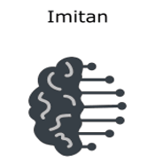
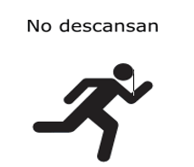
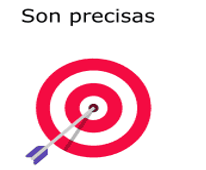

características |
|
|---|---|
|  |
La inteligencia artificial se caracteriza principalmente por su imitación al modo de pensar del ser humano. Posee su propio campo de estudio, el cual se conoce como computación cognitiva. Se basa esencialmente en el reconocimiento de patrones, la minería de datos y en el procesado del lenguaje natural para simular el cerebro humano. |
|
La automatización de tareas es una de las cualidades más significativas de la IA. Esta tecnología permite que actividades redundantes, largas y exhaustivas sean ejecutadas por máquinas o programas, en vez de personas. |
|
|  |
Otro rasgo que las caracteriza es su capacidad de funcionar las 24 horas del día en los 365 días del año. La IA nunca descansa y, por tanto, nunca se detiene. Esto permite que los programas inteligentes puedan avanzar a un ritmo impresionante, sin interrupciones. |
|  |
La alta confiabilidad que se le otorga a la inteligencia artificial es debido a su gran precisión para ejecutar tareas. Las probabilidades de fallas en estos programas son muy bajas. Por supuesto, su grado de precisión depende íntegramente del diseño del software, ya que, al fin y al cabo, la IA es una fiel representación de la creación humana. |
|
Un rasgo esencial de la IA, es la capacidad de manejar cantidades ingentes de información. Es aquí donde el Big Data entra en juego. El Big data hace referencia al volumen de datos tan amplio, que es necesaria la utilización de herramientas especializadas para tratar correctamente a esta cantidad de información. |